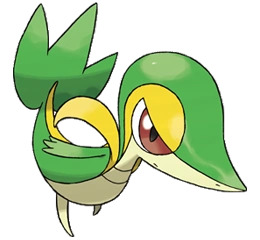
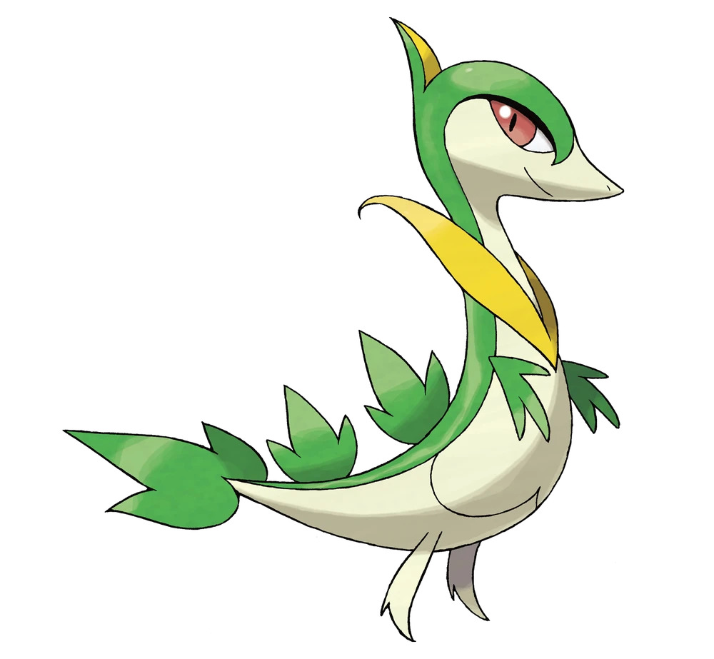
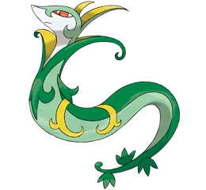
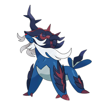

Snivy🌿
Cuando genera energía exponiendo la hoja de la cola a la luz solar, su agilidad aumenta y sus movimientos se vuelven más precisos.
Servine🌿
Se mantiene agachado para abrirse camino entre la hierba mientras corre y, luego, fustiga sin piedad al objetivo con sus látigos de lianas.
Serperior🌿
Amplifica decenas de veces en el interior de su largo cuerpo la energía que genera a partir de la luz solar.
Tepig🔥

Maneja a su rival moviéndose con una agilidad sorprendente para su apariencia. Lanza ráfagas de bolas de fuego por ambas fosas nasales
Pignite🔥🥊

En cuanto entra en combate, su temperatura corporal se dispara hasta el punto de convertirse en una bola de fuego candente.
Emboar🔥🥊

Las llamas que le arden en el interior del pecho emanan con ímpetu hacia el exterior a través de la barbilla y le confieren una barba flamígera.
Oshawott💧

Blande la cuchilleira del vientre a modo de daga. Tras bloquear con ella los movimientos del rival, contraataca asestando ágiles cuchilladas.
Dewott💧

Se dice que sus movimientos al manejar las dos cuchilleiras, fluidos cual corriente de agua, se tomaron como modelo para el arte de la espada.
Samurott💧👤
De actitud indiferente y muy hábil con la espada, propina incesantes y violentos ataques cual maremoto. Se trata de una forma poco común que solo se da en Hisui.